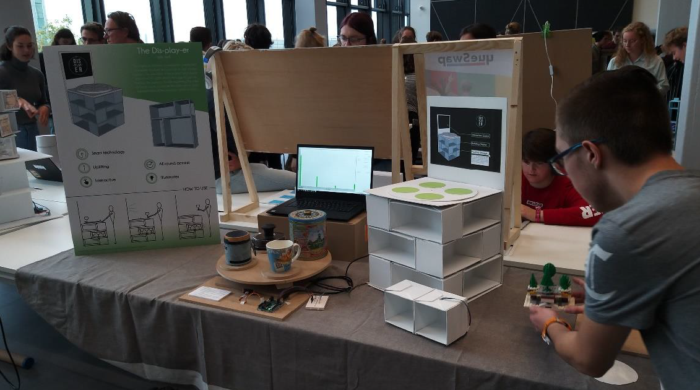

technology and realization
Along with creativity and aesthetics, this was one of the other expertise areas which made me choose
industrial design as a study. Along with drawing I have always been interested in how things are made
and I enjoy the process of figuring out thinking up solutions for turning imagination into reality. From
the start of my bachelor, I have enjoyed this expertise area a lot. Starting at the realization of the
product during from idea to design. However, I have developed a lot of skills that I did not have at the
beginning of my bachelor's. One of the main ones is being able to create CAD models for prototyping.
Although there was no course for this that thought the skill of CAD modeling. I developed this skill
gradually during engineering design, project 3, aesthetics of interaction, and especially during
TU/ecomotive.
Realizing prototypes with various production methods has always been a goal during my bachelor's. To develop this I took up a service desk assistant job at TU/e innovation space. Here I learned the ins and outs of 3d printing. For FDM as well as SLA printing. Also, laser cutting was a newly acquired making skill I learned here. Outside of the hard skills I learned at innovation space, I also learned quick problem-solving skills when it comes to making. Students come in with specific problems all the time. The repetitive brainstorming about making problems learned me invaluable lessons about the making process. At TU/ecomotive I learned to even move a step beyond prototyping. I learned the reality of working with large-scale 3d printing. The difficulties it brings but also the benefits it brings. When it comes to electronics I have learned throughout my study how to apply electronics in prototypes. First with the course creative electronics. But after this by applying my knowledge in project 02 and in my final bachelor project.
Realizing prototypes with various production methods has always been a goal during my bachelor's. To develop this I took up a service desk assistant job at TU/e innovation space. Here I learned the ins and outs of 3d printing. For FDM as well as SLA printing. Also, laser cutting was a newly acquired making skill I learned here. Outside of the hard skills I learned at innovation space, I also learned quick problem-solving skills when it comes to making. Students come in with specific problems all the time. The repetitive brainstorming about making problems learned me invaluable lessons about the making process. At TU/ecomotive I learned to even move a step beyond prototyping. I learned the reality of working with large-scale 3d printing. The difficulties it brings but also the benefits it brings. When it comes to electronics I have learned throughout my study how to apply electronics in prototypes. First with the course creative electronics. But after this by applying my knowledge in project 02 and in my final bachelor project.

.jpg)

Pictures of the stand and realization process of From idea to design.
Large scale 3D printer at CEAD.


.jpeg)
.png)